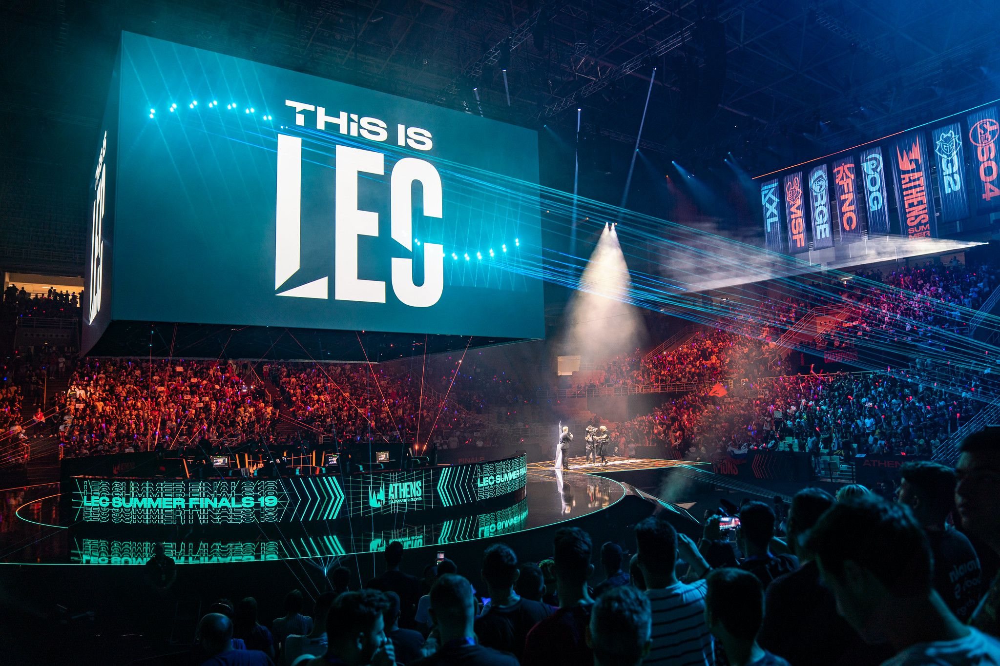

Últimas partidas
Visualiza el historial de las últimas pártidas competitivas.
Descubre las estadísticas y análisis del League Of Legends
Visualiza el historial de las últimas pártidas competitivas.
LOL Statium es tu plataforma completa para explorar y analizar estadísticas del juego League Of Legends. Ya sea que estés buscando información sobre mapas de calor, métricas de jugadores o análisis de Picks y Bans, aquí encontrarás todo lo que necesitas para mejorar tu comprensión y desempeño en el juego.
Nuestro equipo recopila datos actualizados y realiza análisis detallados para brindarte una visión profunda del juego. Explora nuestras secciones y descubre nuevas estrategias, toma decisiones informadas y eleva tu nivel de juego en League Of Legends.